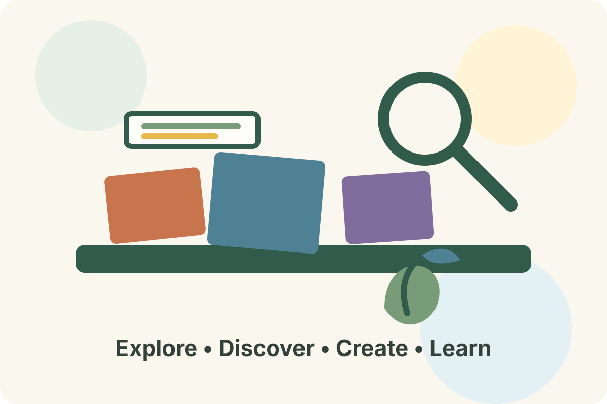

📅 Lesson Plan Library
Build intentional learning experiences around children's interests and investigations.
Explore hands-on curriculum studies, teaching guides, learning experiences, and classroom resources designed for Early Head Start, Head Start, Preschool, and Pre-K educators.

The Curriculum Resource Library provides educators with engaging learning experiences that connect children's curiosity with science, STEM, literacy, mathematics, health, creativity, and exploration.
Discover curriculum experiences organized around children's interests, development, and hands-on exploration.
Children investigate the natural world through observation, experiments, exploration, and discovery.
Explore Studies →Children design, build, test, and solve problems through creative engineering challenges.
Explore STEM →Children explore healthy habits, movement, nutrition, self-care, and well-being.
Explore Health →Build language, communication, storytelling, early literacy, and a love of books.
Explore Literacy →Explore counting, patterns, measurement, shapes, spatial reasoning, and problem solving.
Explore Math →Encourage children to express ideas through art, music, movement, dramatic play, and creative experiences.
Explore Arts →Connect curriculum planning with the other educator resource centers in the Learning Hub.
Build intentional learning experiences around children's interests and investigations.
Document learning and use observations to plan meaningful next steps.
Find teacher-ready forms, planning pages, journals, and classroom supports.